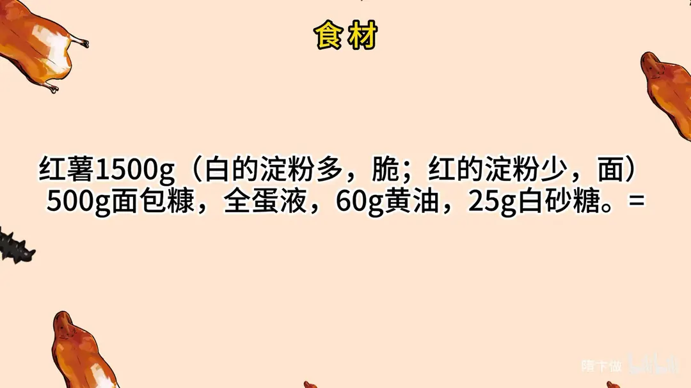
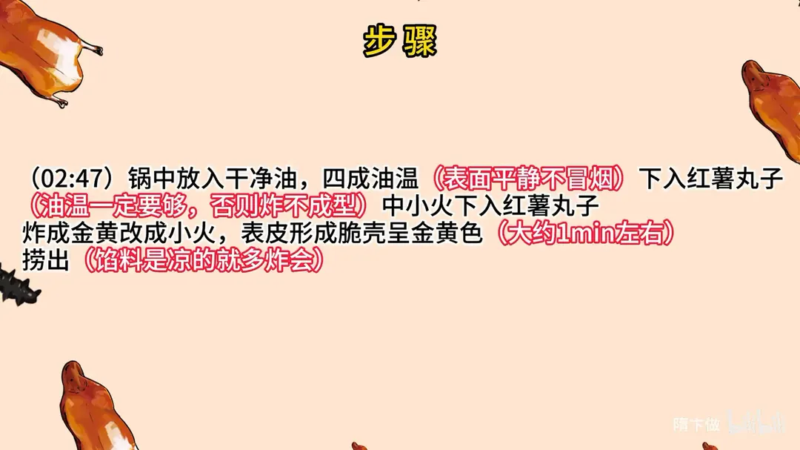
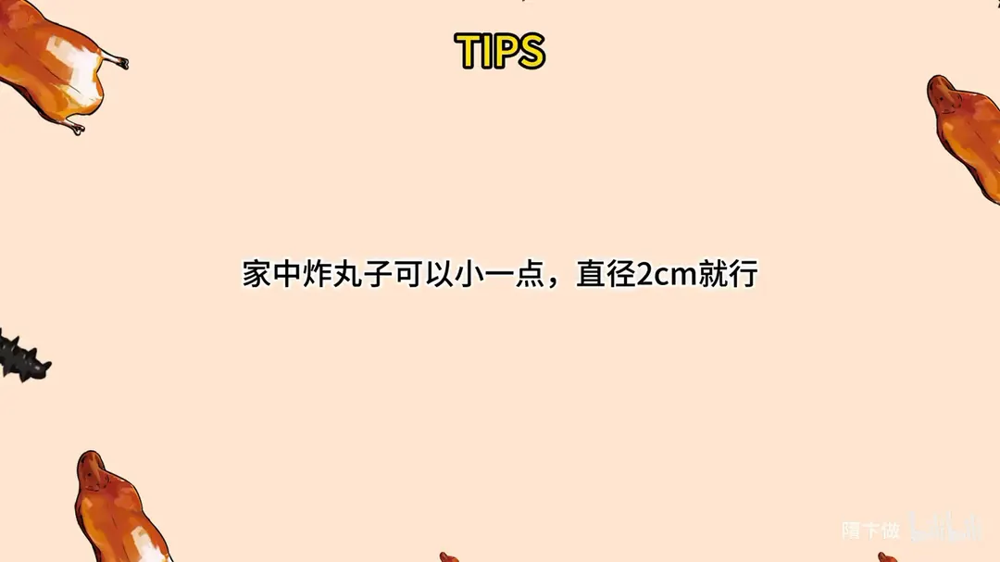

红薯丸子
隋卞一做。红薯 1500g 切块上汽蒸 20 分钟，按成泥后加 60g 黄油、25g 白砂糖，降到 20℃ 左右再搓丸；先拍淀粉、蘸全蛋液、裹 500g 面包糠，四成油温中小火下锅，炸约 1 分钟成脆壳。
原视频：https://www.bilibili.com/video/BV1ae411o7zL
食材
红薯、面包糠、黄油 等 5 样
| 类别 | 用料 | 用量 |
|---|---|---|
| 主料 | 红薯 | 1500g |
| 裹料 | 面包糠 | 500g |
| 裹料 | 全蛋液 | 适量 |
| 调料 | 黄油 | 60g |
| 调料 | 白砂糖 | 25g |
步骤
- 蒸红薯：红薯削皮，切成大小均匀的块；切好的红薯上锅蒸，上汽蒸 20 分钟。
- 按泥调味：红薯放在盆中，用按泥器按成泥（家里可以用擀面杖之类的）；红薯泥中加入 60g 黄油、25g 白砂糖，增加甜味和香味，甜度按个人喜好；红薯泥和好，降温到 20℃ 左右。
- 搓丸裹料：将红薯揉成丸子状，先拍淀粉，再放入鸡蛋液中，再裹上面包糠。
- 炸制：锅中放入干净油，四成油温，表面平静不冒烟，下入红薯丸子；油温一定要够，否则炸不成型。中小火下入红薯丸子，炸成金黄改成小火，表皮形成脆壳呈金黄色，大约 1 分钟，捞出；馅料是凉的就多炸一会。
小贴士
- 家中炸丸子可以小一点，直径 2cm 就行。
讲解要点
难度：★★☆☆☆（难点是油温——低了浸油脱壳，高了外焦内生）
为什么这么做
- 红心加白心一起用：红的甜软，白的叫板栗薯、蒸完更面更粉，混起来比单用传统红心口感更好。
- 蒸到筷子一按就粉：这时淀粉完全糊化，按出来的泥才细，不会夹生带块。
- 趁热下黄油白糖：借红薯自身的温度把黄油化开，才能拌匀、不结块。
- 晾到 20℃ 左右再搓：凉一点更硬，搓丸不粘手、形状也稳。
- 拍粉、拖蛋、裹糠一步不能少：不挂淀粉就炸不成形；蛋液把粉打湿，面包糠才粘得住；糠的唯一作用是那层酥壳。
- 四成油温下锅：表面平静、不冒烟，丢一粒面包渣立刻浮起就是对的温度；太高外焦里生，太低会浸油、脱糠。
- 全程盯着油温：丸子下锅时中火，下完转大火（一进锅油温就掉，得补火），面包糠一上色立刻转小火，捞出前再开大火把吸进去的油逼出来，壳才干爽不回软。
容易翻车
- 红薯泥太烫就搓，粘手又容易散。
- 面包糠裹太厚，壳厚不酥还吸油。
- 油温不够或者冒烟才下锅，丸子会散、会浸油。
- 大小不匀，小的先焦、大的没上色；家里做直径 2cm 最稳。
- 馅本来就是熟的，炸一分钟就够，炸久了黄油会漏出来。
原片尾卡



原片文案
AI 字幕校准稿
不挑地域，不挑年龄，老人小孩都能吃。冬天了，又到了吃红薯的季节，红薯的香味全都出来了。其实传统的红薯丸子，咱们肯定是要红心的；今天我们教你这个方法，是红的、白的一块用，口感可能会比传统的更好吃一点。这个白的叫板栗薯，蒸完了比较面。
把红薯切成块，方便一会蒸。切完之后直接上锅蒸，盖盖开火，上汽蒸它 20 分钟。拿筷子轻轻一按，能按粉了就可以了。
把蒸好的红薯放在一个盆里边，这个是要趁热，有点烫手。拿按泥器把它给弄散，家里没有这东西，用擀面棍也可以，没问题。最后还得下手。
跟传统不一样的地方就来了，里面要加上黄油、加点白糖，增加一个香味和甜味。放多少你们不用记，比例放片尾。趁着红薯的温度把黄油和白砂糖化开，让它混到一起，充分搅拌均匀之后，咱们稍微放一下，让温度降一点。再冷一点的话更硬一点，便于操作。这个甜度合适。
稍微晾一下，来吧，兄弟你尝一口，这个味道是不是你喜欢的？现在吃着就很好吃了。红薯的就合适了。
就是扔到玉米淀粉里边，这就叫拍粉，把每一个红薯丸蘸上淀粉。这个红薯丸子如果不挂淀粉，它就炸不成形。蘸完淀粉之后蘸全蛋液，这叫拖蛋，把表面的淀粉全部湿透了之后，就可以放到面包糠里面，整个过程叫拍粉拖蛋。蘸面包糠碰到这样就可以了，放在旁边防止它粘连。拖蛋、蘸面包糠只有一个目的，就是让它外壳更加酥脆。
锅里边加上干净油，把油烧到四成热就可以了。四成热基本上表面是平静的，不能冒烟，你可以拿点面包渣试一试，你看啪就上来了就可以了。然后把红薯丸子一个个地下入，这会儿我下边关的是中火，因为这红薯馅就是熟的；下去之后呢火就要开大了，因为下完红薯丸子温度下去了。只要表面的面包糠炸够色了，赶紧关小火，一定要控制好温度。大约炸那么一分钟应该就没问题了，因为刚才我们馅是温的，不用炸那么长时间。开大火，让里边的油多少往外吐一点，这就可以了，表面金黄呈硬壳。
又香又脆，只要咬一口，红薯的香甜、黄油的奶香一下子全都涌到嘴里，又细又软又滑。这个做法能完全把红薯的香、从前的那个味道展现出来；还有一种做法是和成泥之后里面加上淀粉再炸，那就不能完全把红薯那个香味体现出来。它不挑地域、不挑年龄，大人老人小孩，全国任何一个地方的人，这个东西真正做到的谁吃都一样，都不会让你觉得口味上不习惯。而且有手就能做，挺适合冬天的，过年也不错，团团圆圆、甜甜蜜蜜。